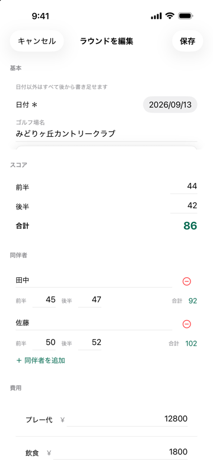
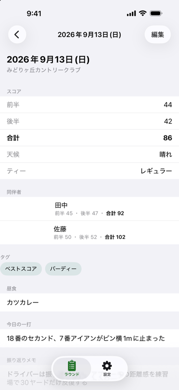
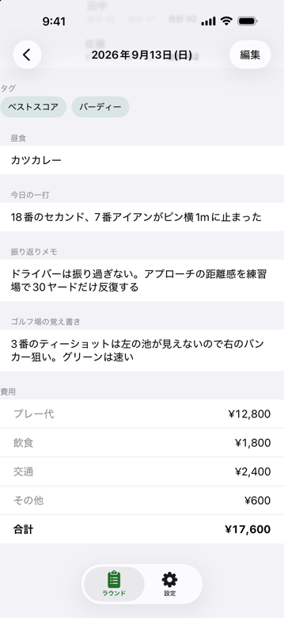
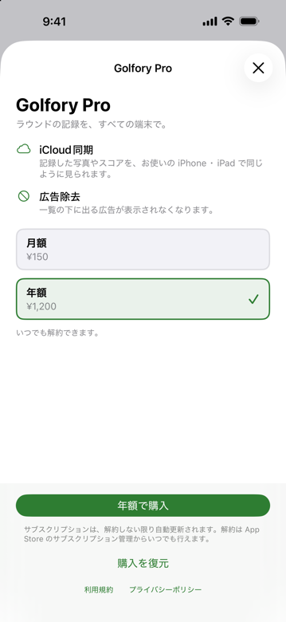

Golfory（ゴルフォリー）は、ゴルフのラウンドを1件ずつ「思い出と費用ごと」残すアプリです。
ホール単位のスコアはつけません。プレー中はいつものスコアアプリ、プレー後の夜にこのアプリ。1画面で書き終わります。
スコアアプリにはスコアが、カメラロールには写真が散らばっています。「前に一緒に行ったとき、あのホールどうだったっけ」と話すとき、探すところから始まります。
18ホール分のスコアはきれいに残ります。誰と回ったか、昼に何を食べたか、いくらかかったかは残りません。
ゴルフ場・合計スコア・同伴者・昼食・写真・今日の一打・振り返り・費用。その日の1ラウンドを、1画面で書き終わります。
日付とゴルフ場名だけで保存できます。あとは残したい分だけ。前半・後半のスコア、同伴者とそのスコア、天候、ティー、昼食、タグ、今日の一打、振り返り、そのゴルフ場の覚え書き。
ゴルフ場名と同伴者名は、一度入れると次から候補に出ます。
OB・ワンペナ・ロストボールを数えたい人だけ、設定でオンにすると入力欄が出ます。既定では出ません。


写真はカメラロールから選ぶだけ。Golfory は写真を複製せず、どの写真かの参照だけを保存します。だからアプリが重くなりません。
「今日の一打」は、その日いちばん心に残った1打を1行で。次のラウンドに向けた振り返りと、そのゴルフ場の注意点も、同じ画面に残ります。
同伴者と話すときに、そのラウンドを開けば、写真も出来事もそこにあります。
プレー代・飲食・交通・その他。ラウンドごとに金額を入れると、その日の合計が出ます。
年間の集計と内訳、練習やグッズの費用まで含めた「ゴルフ家計簿」は、次のバージョンで予定しています。


自動更新です。解約は iOS の「設定」→「サブスクリプション」からいつでもできます。
本アプリが表示するスコア・費用の合計は、あなたが入力した内容の集計です。公式のスコア・ハンディキャップ・会計記録としての効力はありません。